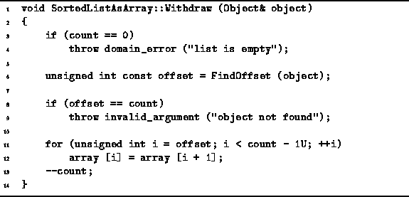

Data Structures and Algorithms
with Object-Oriented Design Patterns in C++
Data Structures and Algorithms
with Object-Oriented Design Patterns in C++
The purpose of the Withdraw function is to remove
an item from the sorted list.
Program  defines the Withdraw
function which takes a reference to an Object.
defines the Withdraw
function which takes a reference to an Object.

Program: SortedListAsArray Class Withdraw Member Function Definition
The Withdraw function makes use of FindOffset
to determine the array index of the item to be removed.
Removing an object from position i of
an ordered list which is stored in an array
requires that all of the objects at positions
i+1, i+2, ...,  ,
be moved one position to the left.
The worst case is when i=0.
In this case,
,
be moved one position to the left.
The worst case is when i=0.
In this case,  items need to be moved to the left.
items need to be moved to the left.
Although the Withdraw function is able to make
use of FindOffset to locate the position
of the item to be removed in  time,
the total running time is dominated by the left shift,
which is O(n) in the worst case.
Therefore, the running time of Withdraw is O(n).
time,
the total running time is dominated by the left shift,
which is O(n) in the worst case.
Therefore, the running time of Withdraw is O(n).
 Copyright © 1997 by Bruno R. Preiss, P.Eng. All rights reserved.
Copyright © 1997 by Bruno R. Preiss, P.Eng. All rights reserved.